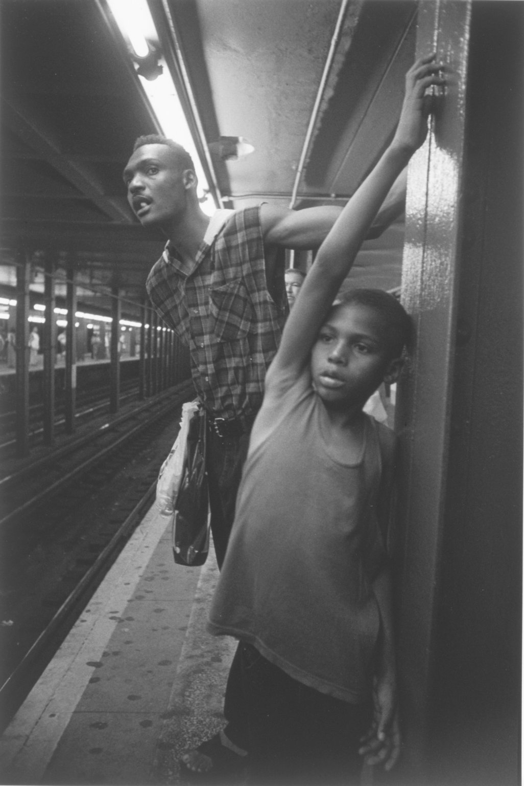

New York City, Jeffrey Ladd, 1995, Brooklyn Museum: Photography
© Jeffrey Ladd
Size: Sheet: 19 15/16 x 15 7/8 in. (50.6 x 40.3 cm) Image: 15 7/8 x 10 11/16 in. (40.3 x 27.1 cm)
Medium: Gelatin silver photographhttps://www.brooklynmuseum.org/opencollection/objects/164609